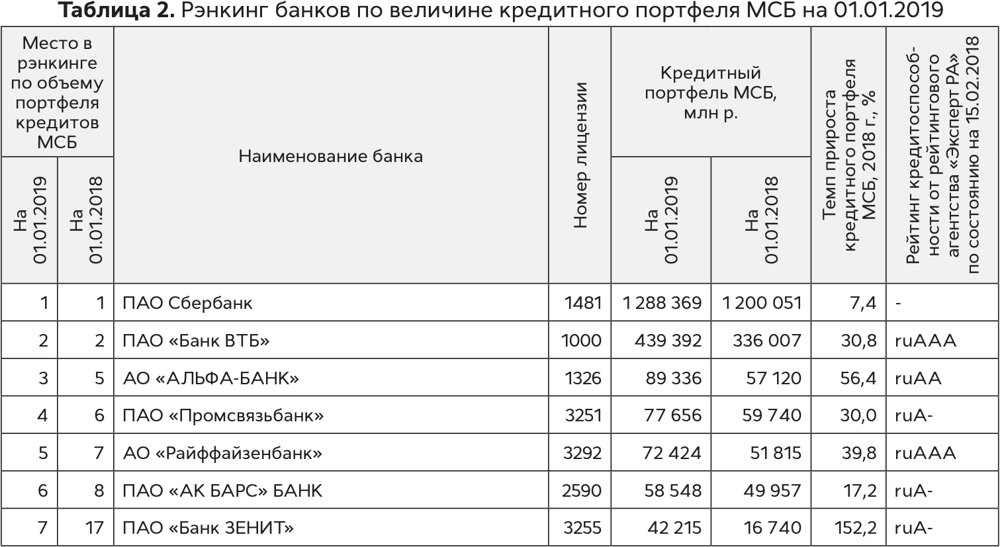
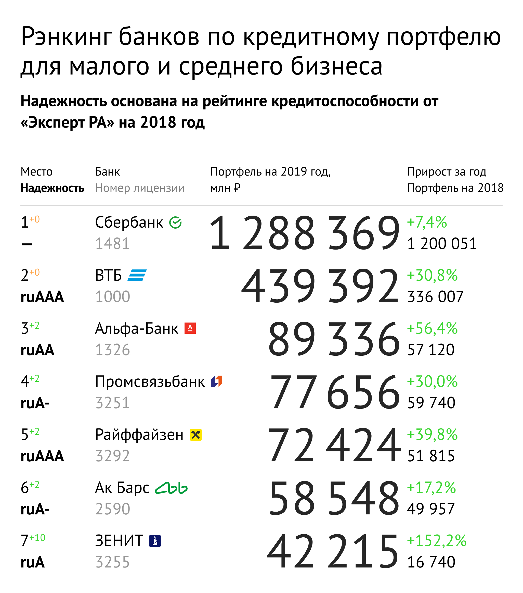

Таблица банка


Таблица должна показывать ранкинг по кредитному портфелю и позволять читателю судить о надежности банка. Вместо этого — мертвое хранилище данных.
Вертикальные надписи в шапке замедляют чтение таблицы.
Данные за текущий год визуально не отличаются от прошлогодних. Беглым взглядом не получится выделить главное.
Излишне широкая колонка с названием банка ломает строку таблицы, что замедляет чтение.
Максимально точный текст мешает сделать таблицу компактнее.